Featurizer¶
import sys
sys.path.insert(0,'..')
from featurizer import *
Load some mobile phone metadata. See standardized data formats for file schemas.
datastore = DataStore(cfg_dir='../configs/config.yml')
featurizer = Featurizer(datastore=datastore, clean_folders=True)
Loading CDR...
Loading recharges...
Loading mobile data...
Loading mobile data...
Loading antennas...
Warning: 10 antennas missing location
Remove duplicate records, filter to just a specific date range, remove outlier days and spammers based on call and text volumes, and remove duplicate records in CDR, recharges, mobile data records, and mobile money records.
# Deduplication
featurizer.ds.deduplicate()
# Filter to just January 5 - February 1 (inclusive)
featurizer.ds.filter_dates('2020-01-01', '2020-02-28')
# Remove transactions involving spammers who place 3+ calls/texts per active day
spammers = featurizer.ds.remove_spammers(spammer_threshold=1.8)
Number of spammers identified: 20
# Remove all records from days more than 2 standard deviations from the mean transaction volume
outlier_days = featurizer.ds.filter_outlier_days(num_sds=2)
Outliers removed: 2020-01-24, 2020-02-06
Produce summary statistics and plots.
print(featurizer.diagnostic_statistics())
{'CDR': {'Days': 60, 'Transactions': 92719, 'Subscribers': 980, 'Recipients': 980}, 'Recharges': {'Days': 60, 'Transactions': 9452, 'Subscribers': 782}, 'Mobile Data': {'Days': 60, 'Transactions': 9548, 'Subscribers': 591}, 'Mobile Money': {'Days': 60, 'Transactions': 5469, 'Subscribers': 682, 'Recipients': 682}}
featurizer.diagnostic_plots()
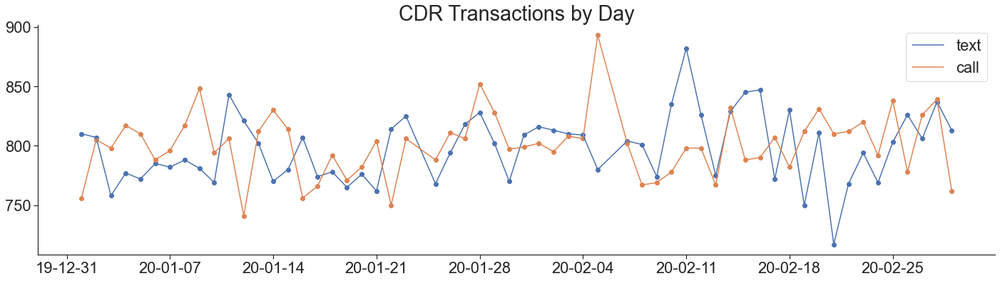
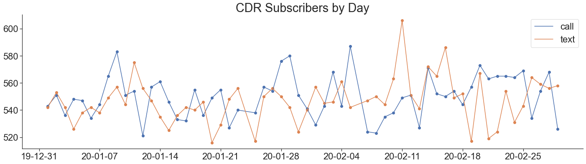
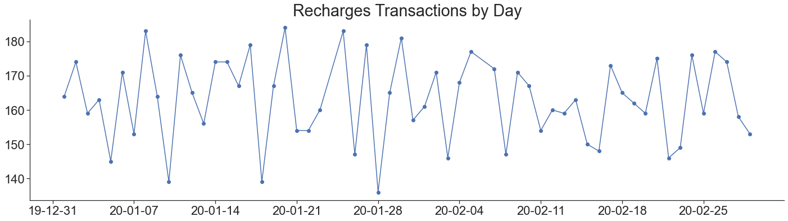
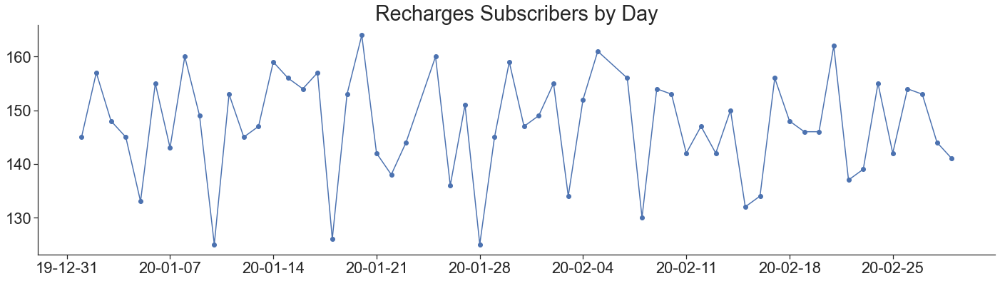
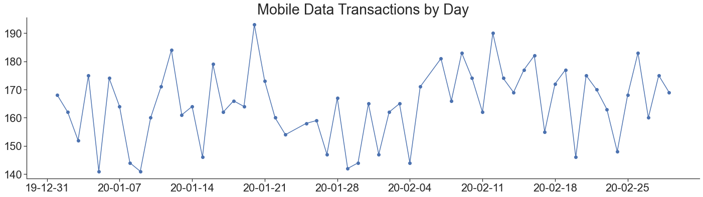
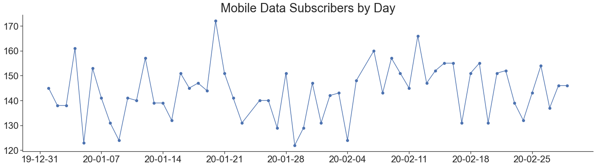
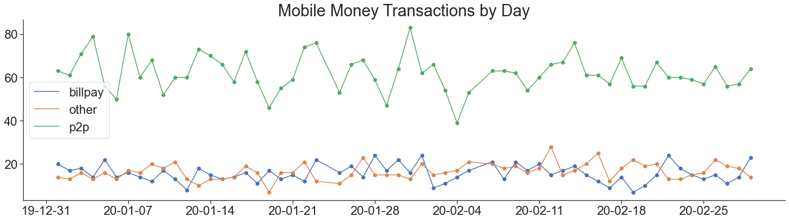
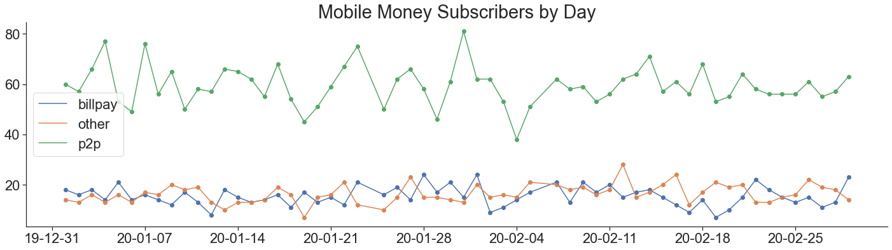
Featurize the data
featurizer.cdr_features()
featurizer.international_features()
featurizer.location_features()
featurizer.recharges_features()
featurizer.mobiledata_features()
featurizer.mobilemoney_features()
featurizer.all_features()
Calculating CDR features...
Calculating international features...
Calculating spatial features...
Calculating recharges features...
Calculating mobile data features...
Calculating mobile money features...
pd.read_csv('../outputs/featurizer/datasets/features.csv').head()
| name | cdr_reporting__number_of_records | cdr_active_days__allweek__allday__callandtext | cdr_active_days__allweek__day__callandtext | cdr_active_days__allweek__night__callandtext | cdr_active_days__weekday__allday__callandtext | cdr_active_days__weekday__day__callandtext | cdr_active_days__weekday__night__callandtext | cdr_active_days__weekend__allday__callandtext | cdr_active_days__weekend__day__callandtext | ... | mobilemoney_outgoing_p2p_amount_min | mobilemoney_outgoing_p2p_amount_max | mobilemoney_outgoing_p2p_balance_before_mean | mobilemoney_outgoing_p2p_balance_before_min | mobilemoney_outgoing_p2p_balance_before_max | mobilemoney_outgoing_p2p_balance_after_mean | mobilemoney_outgoing_p2p_balance_after_min | mobilemoney_outgoing_p2p_balance_after_max | mobilemoney_outgoing_p2p_txns | mobilemoney_outgoing_p2p_contacts | |
|---|---|---|---|---|---|---|---|---|---|---|---|---|---|---|---|---|---|---|---|---|---|
| 0 | dsBHAdXrrk | 184 | 58 | 46 | 50 | 41 | 32 | 35 | 17 | 14 | ... | 26.361252 | 66.175190 | 198.212410 | 144.32855 | 270.12857 | 148.945410 | 78.153360 | 218.63590 | 8.0 | 8.0 |
| 1 | JGPCbfDGes | 209 | 59 | 49 | 50 | 42 | 35 | 34 | 17 | 14 | ... | 33.154373 | 60.508873 | 166.658227 | 83.04488 | 209.16385 | 115.873907 | 22.536007 | 173.27129 | 6.0 | 6.0 |
| 2 | dYwshzRseD | 205 | 59 | 50 | 52 | 42 | 36 | 37 | 17 | 14 | ... | 28.580658 | 63.042980 | 192.916470 | 136.88690 | 234.86200 | 152.284147 | 104.606220 | 200.48862 | 4.0 | 4.0 |
| 3 | ygMEXUQDbn | 218 | 56 | 51 | 46 | 41 | 37 | 34 | 15 | 14 | ... | NaN | NaN | NaN | NaN | NaN | NaN | NaN | NaN | NaN | NaN |
| 4 | YtvkGlMWwe | 212 | 57 | 52 | 45 | 41 | 38 | 31 | 16 | 14 | ... | 35.715935 | 66.577260 | 182.742442 | 151.35474 | 245.24483 | 131.224984 | 91.455580 | 190.52692 | 6.0 | 6.0 |
5 rows × 1203 columns
Plot the distributions of some of the features.
featurizer.feature_plots()
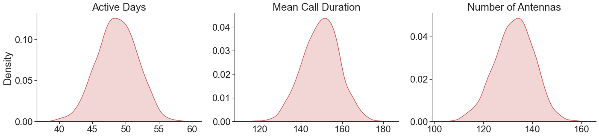
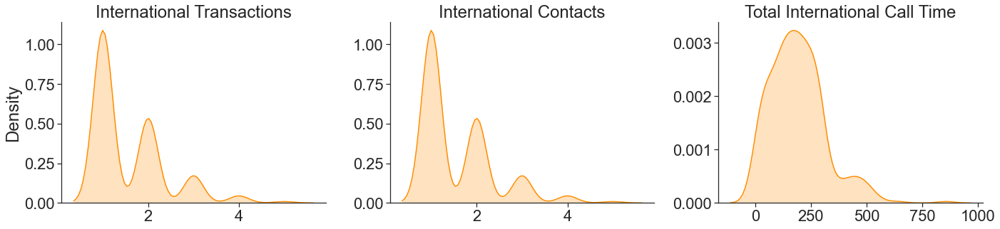
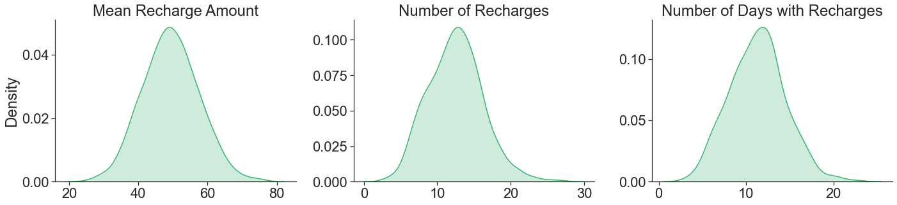
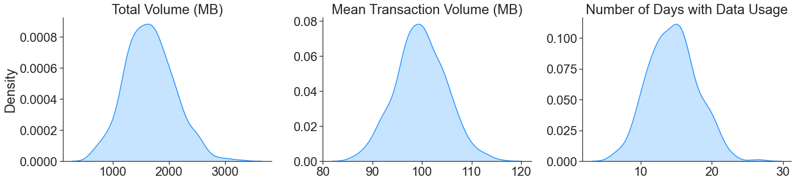
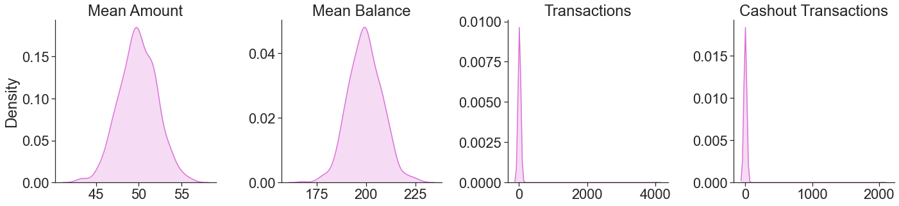
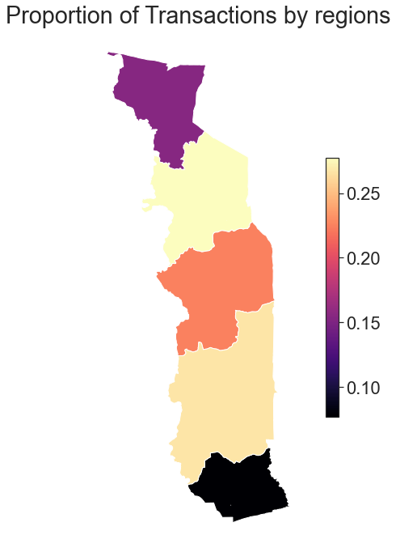
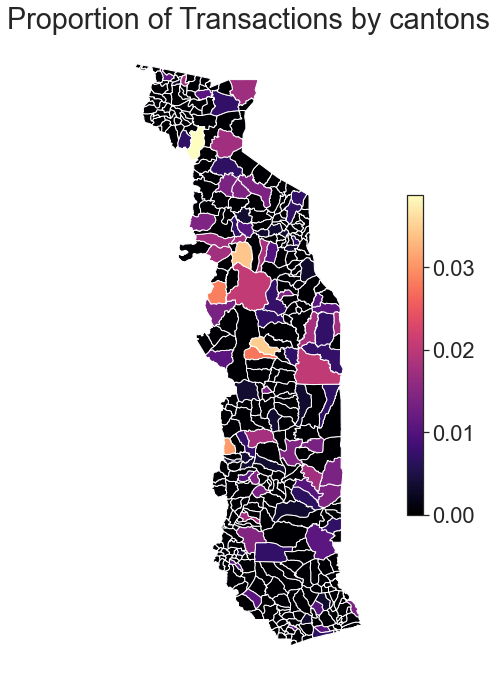
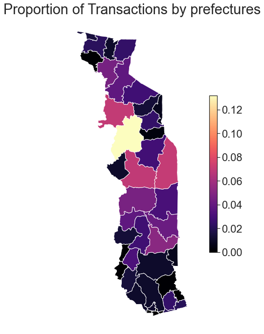
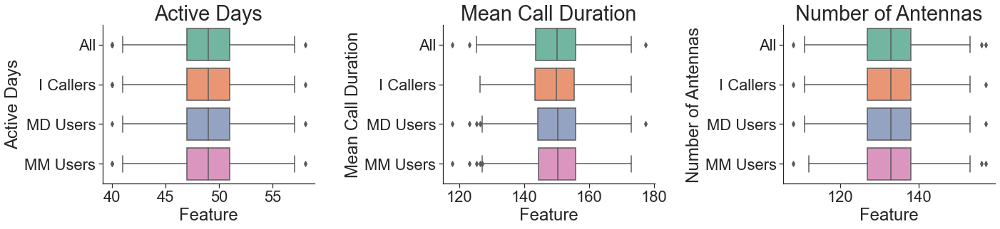